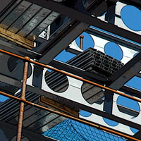

elsewhere
Figure
...detail→
Hewitt Street - Deansgate Rail Station, City Centre M3
2006/April
51 cm x 34 cm
Church
...detail→
King Street - Poplar Street, Failsworth M35
2006/May
51 cm x 34 cm
B of the Bang
...detail→
Sculpture by Thomas Heatherwick, Alan Turing Way - Ashton New Road, Beswick M11
2005/November
51 cm x 34 cm
Peter House
...detail→
Oxford Street, City Centre M1
2005/November
51 cm x 34 cm
Walkway Ceiling
...detail→
Town Hall Extension, Mount Street, City Centre M2
2006/March
51 cm x 34 cm
Albion Mill
...detail→
Pollard Street, Ancoats M4
2007/April
51 cm x 34 cm
Apartment Block
...detail→
Rochdale Road - Marshall Street, City Centre M4
2007/March
51 cm x 34 cm
Passageway Tiles
...detail→
St. Anne's Passageway, King Street, City Centre M2
2006/March
51 cm x 34 cm
Slow Road
...detail→
Fountain Street - York Street, City Centre M2
2006/April
51 cm x 34 cm
Deansgate Offices at Night
...detail→
Spinningfields Square, City Centre M3
2007/February
51 cm x 34 cm
Blue Cobbles
...detail→
Ford Lane - Didsbury M20
2006/June
51 cm x 34 cm
Glass
 ...detail→
...detail→
Didsbury M20
2006/June
51 cm x 34 cm
Construction
...detail→

Building in progress, Princess Street, City Centre M2
2005/July
51 cm x 17 cm
Tyres
...detail→
location unknown
2005/August
51 cm x 17 cm
Big Wheel
...detail→
Exchange Square, City Centre M4
2005/November
51 cm x 17 cm
© T.A.Jessop 2022